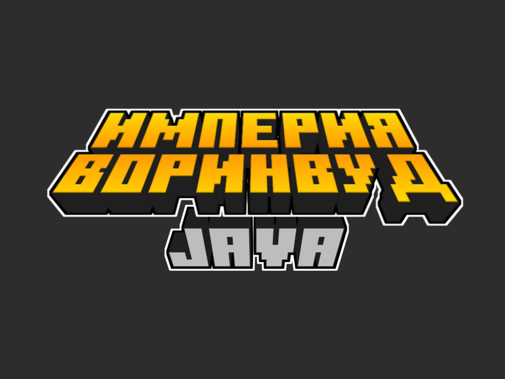
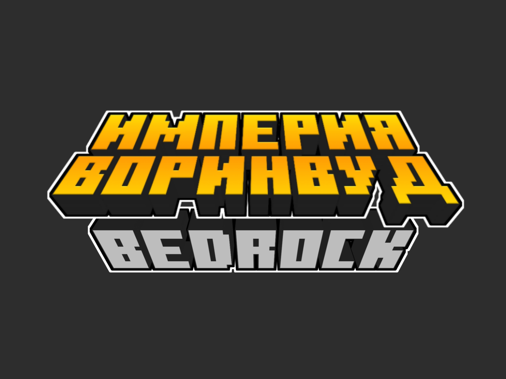

<!--
 Quara Theme by OllieJW (https://olliejw.me)
 License - https://olliejw.me/tos
-->

<!DOCTYPE html>
<head>
  <link rel="icon" href="./img/favicon.png">
  <title>ИМПЕРИЯ ВОРИНВУД</title>
  <meta name="viewport" content="width=device-width, initial-scale=1, maximum-scale=1" />
  <meta name="title" content="ИМПЕРИЯ ВОРИНВУД">
  <meta name="description" content="Приватный дружеский ванильный сервер по MineCraft.">
  <meta name="keywords" content="Minecraft, Server, Империя Воринвуд, Multiplayer">
  <meta name="theme-color" content="#4bb4f1">

  <!-- Edit this to change staff cards! -->
  <script id="staff-template" type="text/template">
    <div class="staff-card shrink">
      
      <h3>{{ name }}</h3>
      <h4>{{ rank }}</h4>
    </div> 
  </script>


  <!--
	Notice:
	When you make changes to config,
	add ?v and a random number to config.css/js
	Example: <link rel="stylesheet" href="config.css?v=100">
  -->

  <script src="https://code.jquery.com/jquery-3.6.0.js"></script>
  <script src="https://cdn.jsdelivr.net/npm/handlebars@latest/dist/handlebars.js"></script>
  <script src="https://mcapi.us/scripts/minecraft.min.js"></script>
  <script src="js/fireflies.js"></script>
  <script src="js/main.js"></script>
  <script src="config.js"></script>
  
  <script>tosAgreed = true</script>

  <link rel="stylesheet" href="https://cdnjs.cloudflare.com/ajax/libs/font-awesome/6.0.0-beta2/css/all.min.css"/>
  <link rel="stylesheet" href="https://fonts.googleapis.com/css?family=Poppins|Raleway|Quicksand">
  <link rel="stylesheet" href="css/style.css">
  <link rel="stylesheet" href="config.css">
</head>

<body>

  <div id="target"></div>

  <script id="template" type="text/x-handlebars-template">

  <header>
    <div class="hero" id="hero">
      <a href="#!"><h1 style="padding-top: 3%;"></h1></a>
	  <div id="pinned">
        <div class="pinned-card shrink shrink-pinned">
          <strong>Поддержи проект!</strong>
          <a href="http://www.donationalerts.ru/r/imperia_vorinvyd" class="btn">КЛИКНИ ПО МНЕ</a>
        </div>
      </div>
	</div>
  </header>

  <section id="header" class="dark">
    <nav class="nav">
      <ul class="nav_links">
        <li><a href="index.html">Главная</a></li>
	<li><a href="#about">О проекте</a></li>
        <li><a href="#servers">Сервера</a></li>
	<li><a href="#staff">Персонал</a></li>
	<li><a href="#news">Новости</a></li>
	<li><a href="#social">Соц. Сети</a></li>
      </ul>
    </nav>
  </section>

  <section class="light" id="about">
    <p class="enlarge">
      <strong>О проект</strong>
      ИМПЕРИЯ ВОРИНВУД - Проект приватных серверов по Minecraft.
    </p>
    <p class="enlarge">
      <strong>История</strong>
      Воринвуд это продолжение другого РП сервера который был удален хостингам. 
      Почему был удалён сервер с хостинга никому кроме хостинга не известно, но на этом основании через неделю Ярослав(CuSO4k) предложил Степану(MomentariyModder) создать продолжение сервера, и он это сделав пригласив ещё Kritter который занимался сценарием. 
    </p>
	<p class="enlarge">
	<strong>Принцип работы</strong>
	Сервер доступен для: Лицензионных и Пиратских аккаунтав. Для прохода на сервер необхидомо написать заявку в ДС.
	</p>
  </section>

  <section class="dark" id="servers">
    <h1>Сервера</h1>
    <div class="feature right">
      
      <p class="enlarge">
        <strong>ИМПЕРИЯ ВОРИНВУД JAVA</strong>
        РП-Сервер для Minecraft: Java Edition. 
		<strong></strong>
		<b>Платформы</b>: Windows, macOS и Linux.
		<strong></strong>
		<b>Версии</b>: 1.16.5 - 1.18.2
		<strong></strong>
		<b>Статус</b>: идет II сезон
		<strong></strong>
		<a href="java.html" class="btn2">Подробнее</a>
		<a href="https://monitoringminecraft.ru/server/873499" class="btn2">Мониторинг</a>
    </div>
    <hr>
    <div class="feature right">
      
      <p class="enlarge">
        <strong>ИМПЕРИЯ ВОРИНВУД BEDROCK</strong>
        РП-Сервер для Minecraft: Bedrock Edition. 
		<strong></strong>
		<b>Платформы</b>: Windows 10/11, Android, iOS/ipadOS, XBOX, PS4/PS5 и Nintendo Switch.
		<strong></strong>
		<b>Версии</b>: 1.18.10 - 1.18.12
		<strong></strong>
		<b>Статус</b>: В разработке. 
		<strong></strong>
		<a href="bedrock.html" class="btn2">Подробнее</a>
      </p>
    </div>
   </section>
   
  <section class="light">
    <h1>Администрация проекта</h1>
    <div id="staff" class="grid"></div>
  </section>

  <section class="dark">
    <h1>Новости</h1>
    <div id="news">
	  <div class="news-card">
	  <strong>ИМПЕРИЯ ВОРИНВУД BEDROCK! (14.03.2022 01:09)</strong>
        <p>Недавно администрация проекта анонсировали сервер для Minecraft: Bedrock Edition. Открытие уже скоро!</p>
		<p> </p>
		<p><b>#bedrock</b></p>
      </div>
	  <p> </p>
	  <div class="news-card">
        <strong>Новый сайт! (06.03.2022 01:06)</strong>
        <p>У нас новый сайт.</p>
		<p> </p>
		<p><b>#проект</b></p>
      </div>
	  <p> </p>
      <div class="news-card">
        <strong>Набор на сервер без приглашений от игроков! (02.03.2022 01:32)</strong>
        <p>На сервере объявлен набор, но в этот раз не требуется приглашение от игроков.</p>
		<p> </p>
		<p><b>#java</b>, <b>#bedrock</b></p>
      </div>
	   <p> </p>
       <a href="https://discord.com/invite/x5uHZ5CEtE" class="btn2">Больше новостей</a>
    </div>
  </section>

  <section class="light">
    <h1>Социальные сети</h1>
    <div class="buttons" id="social">
      <a href="https://discord.com/invite/x5uHZ5CEtE" class="btn">Discord</a>
      <a href="https://vk.com/vorinvyd" class="btn">ВК</a>
	  <a href="https://www.twitch.tv/vorinvyd" class="btn">Twitch</a>
	  <a href="https://www.tiktok.com/@empire_of_vorinvud" class="btn">TikTok</a>
    </div>
  </section>
  
  
  <footer>
    <a>&copy; {{server_name}} 2021-2022. Все права защищены.</br>Проект {{server_name}} не относится к Mojang Studios.</a>
	<a><b>EMAIL:</b> imperiavorinvud@gmail.com</a>
  </footer>
  </script>
  
  <!-- License -->
  <script src="https://remote.olliejw.me/license.js"></script>
</body>
